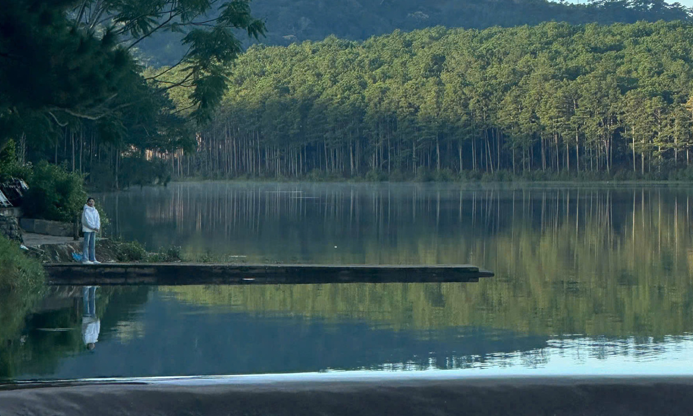
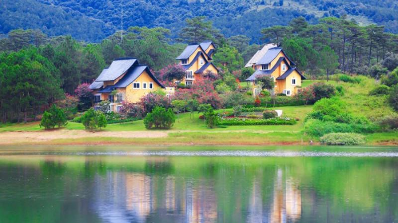
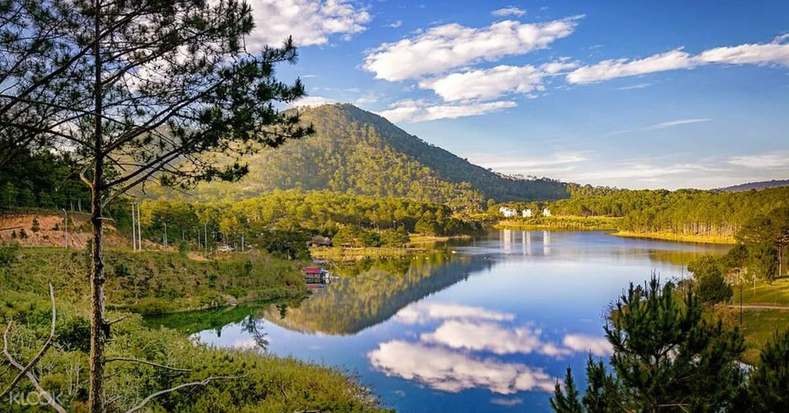
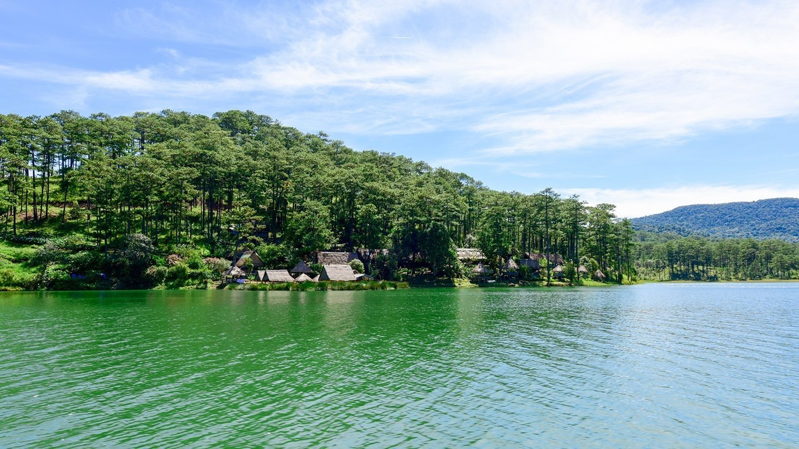

Hồ Tuyền Lâm là một trong những danh thắng nổi tiếng và quyến rũ nhất tại thành phố Đà Lạt, tỉnh Lâm Đồng. Nằm cách trung tâm thành phố khoảng 6 km về phía Nam, hồ được biết đến không chỉ bởi vẻ đẹp thiên nhiên hùng vĩ mà còn vì không khí trong lành, yên bình, lý tưởng cho những ai tìm kiếm một nơi thư giãn giữa cảnh sắc núi rừng tuyệt vời của cao nguyên Lâm Viên.

Hồ Tuyền Lâm có diện tích khoảng 350 ha và được hình thành từ con suối Tía chảy qua dãy núi Voi. Hồ nằm ở độ cao 1.500 m so với mực nước biển, bao quanh bởi những cánh rừng thông bạt ngàn, tạo nên một không gian yên tĩnh và mát mẻ quanh năm. Chính vị trí này đã giúp Tuyền Lâm trở thành một trong những hồ nước ngọt lớn nhất và đẹp nhất của Đà Lạt, góp phần tạo nên cảnh quan thiên nhiên thơ mộng và ấn tượng.

Hồ Tuyền Lâm không chỉ là nơi để chiêm ngưỡng cảnh đẹp mà còn là điểm đến tuyệt vời cho các hoạt động du lịch, thể thao và giải trí. Một trong những hoạt động phổ biến nhất là du ngoạn trên hồ bằng thuyền, du khách có thể thuê thuyền pedal để chèo ra giữa hồ, tận hưởng không khí trong lành và ngắm nhìn toàn cảnh xung quanh.

Đặc biệt, trong khu vực xung quanh hồ, du khách còn có thể tham gia các hoạt động như cắm trại, dã ngoại, câu cá hoặc đi bộ tham quan các tuyến đường rừng. Những con đường quanh hồ được lát đá sạch sẽ, tạo điều kiện thuận lợi cho việc dạo bộ và ngắm cảnh. Tại đây, du khách cũng có thể tham gia các hoạt động ngoài trời như leo núi, khám phá các khu vực quanh hồ hoặc đơn giản là tận hưởng một ngày thư giãn với bạn bè và gia đình.